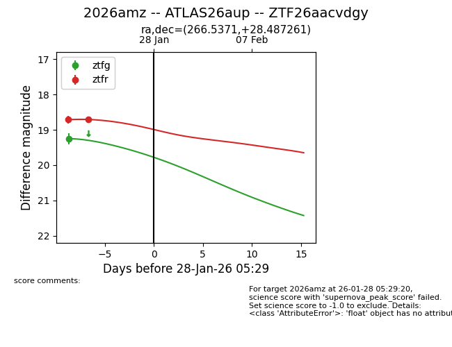
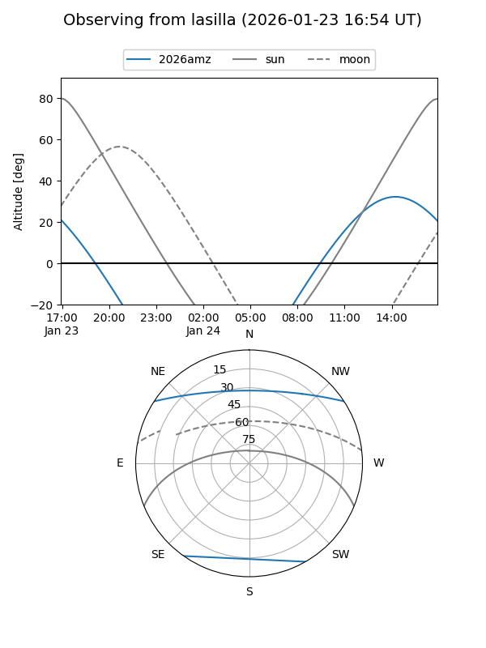
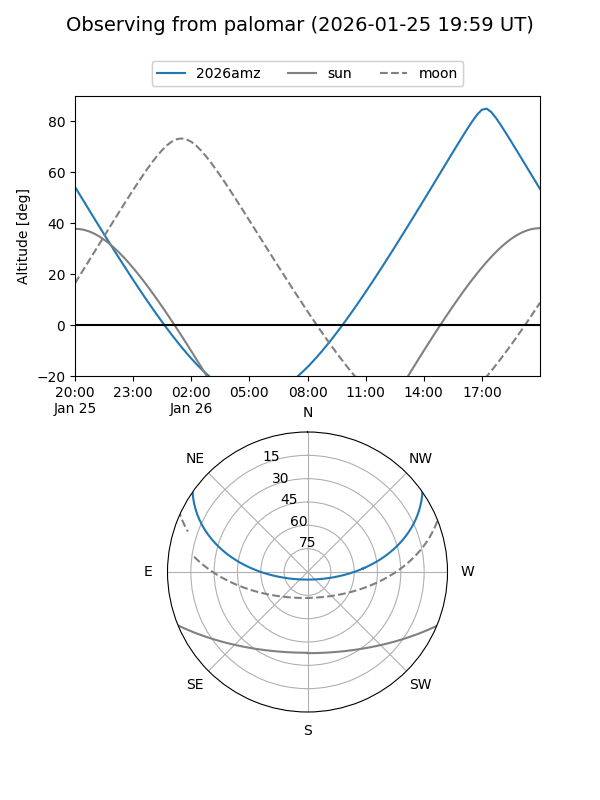
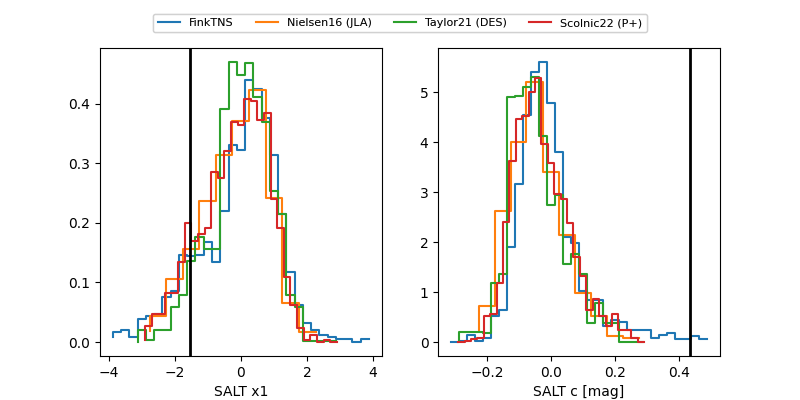

2026amz
Target 2026amz at 2026-01-26 00:51
Aliases and brokers:
FINK: link
Lasair: link
ALeRCE: link
TNS: link
YSE: link
alt names
ZTF26aacvdgy (ztf,fink_ztf)
2026amz (tns,yse)
ATLAS26aup (atlas)
Coordinates:
equatorial (ra, dec) = 266.5371,+28.48726
equatorial (HMS+DMS) = 17:46:08.90,+28:29:14.14
galactic (l, b) = (53.2222,+25.93347)
Flags:
Photometry:
last ztfg=19.25, ztfr=18.71
1 ztfg, 2 ztfr detections
Lightcurve

Visibility


Additional plots
